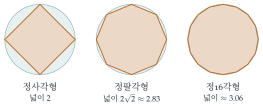

STEP III 2022, 문제 4
다음으로 넘어가기 전에 문제를 먼저 읽어 보자. 이 문제는 OCR에서 내려받을 수 있는 2022년 STEP 문제지 모음(zip 파일)의 STEP III 문제지에 있다: www.ocr.org.uk/Images/696587-2022-past-papers.zip
도입
이 문제의 마지막 줄은 수학에서 가장 아름다운 공식 가운데 하나이며, 이런 종류의 공식으로는 가장 오래된 것 가운데 하나이다. 이 공식은 1593년 프랑스의 법률가이자 수학자인 비에트(François Viète)가 발표하였는데, 누군가가 \(\pi\)를 무한 과정의 결과로 정확하게 나타낸 것은 이것이 처음이었다. 비에트 이전에는 \(\pi\)를 근삿값으로만 다룰 수 있었지만, 그 이후로는 끝없이 계속하면 모든 자릿수를 알려 주는 공식으로 \(\pi\)를 정의할 수 있게 되었다.
이 공식은 신비롭게 보인다. \(2\)의 제곱근이 겹겹이 중첩된 꼴은 도대체 어디에서 나오는 것일까? 이 문제는 그것이 배각 공식(double-angle formula)을 되풀이하여 사용한 결과임을 보여 주며, 그 과정에서 같은 방법으로 덜 알려진 또 하나의 공식, 곧 \(\ln 2\)에 대한 공식도 얻는다.
시작하기 전에
\(\sinh\)의 배각 공식은 무엇인가? (확실하지 않다면 \(\sinh 2y\)와 \(\sinh y \cosh y\)를 지수함수로 나타내어 비교해 보아라.)
\(\sin 2y = 2\sin y\cos y\)와 똑같이 \(\sinh 2y = 2\sinh y\cosh y\)이다. 이 항등식 하나를 거듭 사용하는 것이 문제 전체를 이끌어 간다. 문제는 마지막 부분 직전까지 쌍곡선함수(hyperbolic functions)를 다루며, 마지막 부분에서 보통의 삼각함수로 넘어간다.
차근차근 풀기
단계 1 거듭 반으로 나누기
\(n = 1\)인 경우는 \(y = x/2\)로 둔 배각 공식 그 자체이다. \[\sinh x = 2\cosh\left(\frac{x}{2}\right)\sinh\left(\frac{x}{2}\right).\]
\(n\)일 때 공식이 성립한다고 하자. 마지막 인수는 \(\sinh(x/2^n)\)이다. 이것을 어떻게 바꾸어 쓰면 \(n + 1\)일 때의 공식을 얻을 수 있는가?
이 인수에 배각 공식을 적용하면 \(\sinh(x/2^n) = 2\cosh(x/2^{n+1})\sinh(x/2^{n+1})\)이다. 이를 대입하면 \[\sinh x = 2^{n+1}\cosh\left(\frac{x}{2}\right)\cdots\cosh\left(\frac{x}{2^n}\right)\cosh\left(\frac{x}{2^{n+1}}\right)\sinh\left(\frac{x}{2^{n+1}}\right),\] 이고, 이것이 \(n + 1\)일 때의 공식이다. 따라서 수학적 귀납법(induction)에 의하여 모든 \(n\)에 대하여 공식이 성립한다.■
결론을 이끌어 내려면 양변을 \(x\)로 나눈 다음, 양변에 \(\dfrac{x/2^n}{\sinh(x/2^n)}\)을 곱한다. 우변에서는 \(2^n \sinh(x/2^n) \cdot \dfrac{x/2^n}{x\,\sinh(x/2^n)} = 1\)이므로 cosh 항들의 곱만 남는다.■
단계 2 극한
급수 전개로부터 \(y \neq 0\)일 때 \[\frac{\sinh y}{y} = 1 + \frac{y^2}{3!} + \frac{y^4}{5!} + \cdots,\] 이고, 이것은 \(y \to 0\)일 때 \(1\)로 수렴하므로 그 역수 \(y/\sinh y\)도 \(1\)로 수렴한다. (더 엄밀하게 하고 싶다면 다음과 같이 하면 된다. 나머지 부분 \(\frac{y^2}{3!} + \frac{y^4}{5!} + \cdots\)에 나오는 계승은 모두 \(6\) 이상이므로, \(0 < |y| < 1\)일 때 나머지 부분은 많아야 \(\frac{1}{6}\bigl(y^2 + y^4 + \cdots\bigr) = \frac{y^2}{6(1-y^2)}\)이고, 이것은 \(0\)으로 수렴한다.)
이제 \(x\)를 고정하고 소문항 (i)에서 \(n \to \infty\)로 보내자. 그러면 \(y = x/2^n \to 0\)이므로 좌변은 \(\dfrac{\sinh x}{x} \times 1\)로 수렴한다. 우변은 부분곱(partial product)이므로, 부분곱은 \(\dfrac{\sinh x}{x}\)로 수렴한다. 이것이 바로 무한곱(infinite product)의 뜻이다.■
단계 3 \(\ln 2\)에 대한 공식
\(x = \ln 2\)이면 \(e^{x/2} = \sqrt2\)이므로 \[\cosh\left(\frac{x}{2}\right) = \frac{2^{1/2} + 2^{-1/2}}{2} = \frac{2 + 1}{2\sqrt2} = \frac{3}{2\sqrt2}.\] 마찬가지로 \(e^{x/4} = 2^{1/4}\)이므로 \(\cosh(x/4) = \dfrac{2^{1/4} + 2^{-1/4}}{2}\)이고, 분자와 분모에 \(2^{1/4}\)을 곱하면 \(\dfrac{2^{1/2} + 1}{2 \times 2^{1/4}}\)을 얻는다.■
\(\cosh(x/2^k)\)의 일반적인 규칙은 무엇인가? 분모 \(2 \times 2^{1/2^k}\)을 모두 곱하면 어떻게 되는가?
같은 계산을 하면 모든 \(k \geq 1\)에 대하여 \[\cosh\left(\frac{x}{2^k}\right) = \frac{1 + 2^{1/2^{k-1}}}{2} \times 2^{-1/2^k}.\] 이다. (\(k = 1\)이면 앞에서와 같이 \(\frac{1 + 2}{2} \times 2^{-1/2} = \frac{3}{2\sqrt2}\)이다.) \(k = 1, 2, 3, \ldots\)에 대하여 곱하면 \(2\)의 거듭제곱들은 합쳐져서 \(2^{-(1/2 + 1/4 + 1/8 + \cdots)} = 2^{-1}\)이 되고, 첫 번째 분수는 \(\frac{1+2}{2} = \frac32\)이다. 따라서 무한곱은 \[\frac32 \times \frac12 \times \frac{1 + 2^{1/2}}{2} \times \frac{1 + 2^{1/4}}{2} \times \frac{1 + 2^{1/8}}{2} \cdots.\] 이다. 한편 \(\sinh(\ln 2) = \frac{2 - \frac12}{2} = \frac34\)이므로 \(\dfrac{\sinh x}{x} = \dfrac{3}{4\ln 2}\)이다. 양변에서 인수 \(\frac34\)가 약분되어 \[\frac{1}{\ln 2} = \frac{1 + 2^{1/2}}{2} \times \frac{1 + 2^{1/4}}{2} \times \frac{1 + 2^{1/8}}{2} \cdots. \qed\] 가 남는다.
단계 4 비에트의 공식
소문항 (iv)에는 \(\pi\)가 들어 있으므로, 쌍곡선함수가 아니라 보통의 삼각함수에서 나와야 한다. \(\sinh\)와 \(\cosh\) 대신 \(\sin\)과 \(\cos\)을 넣어도 소문항 (i)과 (ii)의 모든 내용이 여전히 성립하는가?
성립한다. 귀납법에서는 배각 공식만 사용하였고, \(\sin 2y = 2\sin y\cos y\)이다. 극한에서는 \(y \to 0\)일 때 \(\frac{\sin y}{y} \to 1\)이라는 사실만 사용하였는데, 이는 같은 방법으로 \(\sin y = y - \frac{y^3}{3!} + \cdots\)에서 따라 나온다. 따라서 \(x \neq 0\)이고 (\(x\)가 \(\pi\)의 배수가 아니어서 도중에 \(0\)이 되는 인수가 없을 때) \[\frac{\sin x}{x} = \cos\left(\frac{x}{2}\right)\cos\left(\frac{x}{4}\right)\cos\left(\frac{x}{8}\right)\cdots.\] 이다.
좌변이 \(2/\pi\)가 되도록 \(x\)를 정하고, 처음 몇 개의 인수를 계산해 보아라. 반각 공식(half-angle formula) \(\cos\frac{\theta}{2} = \sqrt{\frac{1 + \cos\theta}{2}}\) (\(0 \leq \theta \leq \pi\)일 때)이 유용할 것이다.
\(x = \frac{\pi}{2}\)로 두자. 그러면 \(\frac{\sin x}{x} = \frac{1}{\pi/2} = \frac{2}{\pi}\)이고, 인수들은 \(\cos\frac\pi4, \cos\frac\pi8, \cos\frac{\pi}{16}, \ldots\)이다. 첫 번째 인수는 \(\cos\frac\pi4 = \frac{\sqrt2}{2}\)이다. 어떤 인수가 \(\cos\theta = \frac{c}{2}\)이면, 반각 공식에 의하여 다음 인수는 \[\cos\frac{\theta}{2} = \sqrt{\frac{1 + c/2}{2}} = \frac{\sqrt{2 + c}}{2}.\] 이다. 따라서 분자는 \(\sqrt2\), \(\sqrt{2 + \sqrt2}\), \(\sqrt{2 + \sqrt{2 + \sqrt2}}\), …와 같이 이어지며, 각 항은 앞의 항에 \(2\)를 더한 뒤 제곱근을 취하여 얻는다. 이것이 비에트의 공식이다.■
돌아보기
곱의 망원(telescoping). 소문항 (i)의 항등식은 어떤 합들이 연쇄적으로 소거되는 것과 마찬가지로, 연쇄적으로 소거되는 곱이다.
유한 항등식이 먼저, 극한은 나중에. 2.4 절에서와 같이, 모든 단계는 유한한 \(n\)에 대하여 정확하였고, 필요한 극한은 매우 간단한 \(\frac{\sin y}{y} \to 1\)뿐이었다.
쌍곡선함수와 원함수는 쌍둥이이다. 두 함수 모두 같은 배각 공식과 같은 작은 각의 극한을 만족하므로, 같은 증명이 두 경우 모두에 통하였다. 이것은 우연이 아니다. 5.7 절에서 보겠지만 \(\cosh(\mathrm{i}x) = \cos x\)이다.
숨은 수학
비에트의 공식에는 아르키메데스(Archimedes)까지 거슬러 올라가는 기하학적 의미가 있다. 반지름이 \(1\)인 원에 내접하는 변이 \(2^n\)개인 정다각형(regular polygon)의 넓이는 \(A_n = 2^{n-1}\sin\frac{2\pi}{2^n}\)이다. 변의 개수를 두 배로 늘리면 넓이에 \[\frac{A_{n+1}}{A_n} = \frac{2^n \sin(\pi/2^n)}{2^{n-1}\cdot 2\sin(\pi/2^n)\cos(\pi/2^n)} = \frac{1}{\cos(\pi/2^n)}.\] 이 곱해진다. 정사각형(\(A_2 = 2\))에서 시작하여 끝없이 두 배로 늘려 가면 넓이는 원의 넓이 \(\pi\)로 수렴한다. 따라서 \(\pi = 2 \div \bigl(\cos\frac\pi4 \cos\frac\pi8 \cos\frac{\pi}{16}\cdots\bigr)\)이고, 이것이 비에트의 공식이다. 곱의 각 인수는 그림 2.5.1에서 이웃한 두 다각형의 넓이의 비이다.

무한곱
비에트의 곱은 수학에서 최초의 무한곱이었다. 그 뒤로 다른 무한곱들이 이어졌다. 존 월리스(John Wallis)는 1655년에 \(\frac{\pi}{2} = \frac{2}{1}\cdot\frac{2}{3}\cdot\frac{4}{3}\cdot\frac{4}{5}\cdot\frac{6}{5}\cdot\frac{6}{7}\cdots\)을 발견하였고, \(\frac{\sin x}{x}\)에 대한 오일러(Euler)의 곱은 2.4 절에서 나왔다. 대학에서는 무한곱이 언제 수렴(converge)하는지를 배우게 된다. 대략적으로 말하면, 작은 양수 \(a_n\)에 대하여 \(\prod(1 + a_n)\)은 \(\sum a_n\)과 비슷하게 행동하는데, 이는 \(\ln(1 + a_n) \approx a_n\)이기 때문이다. 여기서는 \(1 - \cos(\pi/2^n) \approx \frac12(\pi/2^n)^2\)이고, 이 값은 매번 \(4\)분의 \(1\)로 줄어들므로 곱은 빠르게 수렴한다.
얼마나 빠른가?
인수 \(n\)개를 곱한 부분곱은 정확히 \(\dfrac{1}{2^n\sin(\pi/2^{n+1})}\)과 같고, 그 오차는 약 \(\frac{\pi^2}{6 \cdot 4^{n+1}}\)에 \(\frac2\pi\)를 곱한 값이다. 인수가 하나 늘어날 때마다 답은 약 \(4\)배 정확해지며, 이는 소수점 아래 자릿수로 약 \(0.6\)자리를 얻는 셈이다. 인수 열 개를 곱하면 \(2/\pi\)를 소수점 아래 여섯째 자리까지 정확하게 얻는다. 좋은 결과이지만, 단계마다 정확한 자릿수를 두 배로 늘리는 2.6 절의 방법에 비하면 어림도 없이 느리다.
사고 기술
\(f(x)\)와 \(f(x/2)\)를 잇는 항등식은 거듭하여 적용할 수 있다. 그 결과에 극한을 취하면 무한급수나 무한곱이 되는 경우가 많다.
\(n\)단계 뒤에 남는 “나머지” 항(여기서는 \(2^n\sinh(x/2^n)\))을 찾아서 그 극한을 따로 구하라. 이 방식은 무한곱에서 프랙털의 구성에 이르기까지 해석학 곳곳에 나타난다.
더 도전하기
1990년 판. STEP I 1990, 문제 8를 풀어 보아라. 이 문제는 \(\sin\)의 배각 공식 외에는 아무것도 사용하지 않고, 이 절과는 다른 경로로 비에트의 곱에 도달한다. 어느 접근이 더 자연스럽게 느껴지는가?
다른 각. \(\frac{\sin x}{x}\)에 대한 곱에 \(x = \frac{\pi}{3}\)을 대입하여 \(\frac{3\sqrt3}{2\pi}\)를 무한곱으로 나타내고, 처음 두 인수를 간단히 하여라.
인수가 몇 개 필요한가? 계산기를 사용하여 \(\pi\)를 소수점 아래 \(4\)자리까지 정확하게 얻으려면 비에트의 곱의 인수가 몇 개 필요한지 구하여라. 인수가 하나 늘어날 때마다 왜 약 \(0.6\)자리를 얻는지 설명하여라.
\(\ln 3\)에 대한 공식. \(x = \ln 3\)으로 두고 소문항 (iii)을 반복하여 \(\frac{1}{\ln 3}\)을 무한곱으로 나타내어라. \(\frac{1}{\ln 3}\)을 소수점 아래 두 자리까지 얻으려면 인수가 몇 개 필요한가? 이 곱은 왜 비에트의 곱보다 느리게 수렴하는가?
더 읽을거리
Petr Beckmann, A History of \(\pi\) (St Martin’s Press). 아르키메데스, 비에트, 월리스 등의 이야기를 열정적으로 들려준다.
Jonathan Borwein & Peter Borwein, Pi and the AGM (Wiley). 2.6 절의 방법을 포함하여 \(\pi\) 계산의 본격적인 수학을 다룬다. 이 장을 공부하고 나면 제1장은 읽을 수 있다.
Eli Maor, Trigonometric Delights (Princeton University Press). 비에트와 그의 곱에 관한 장이 있다.